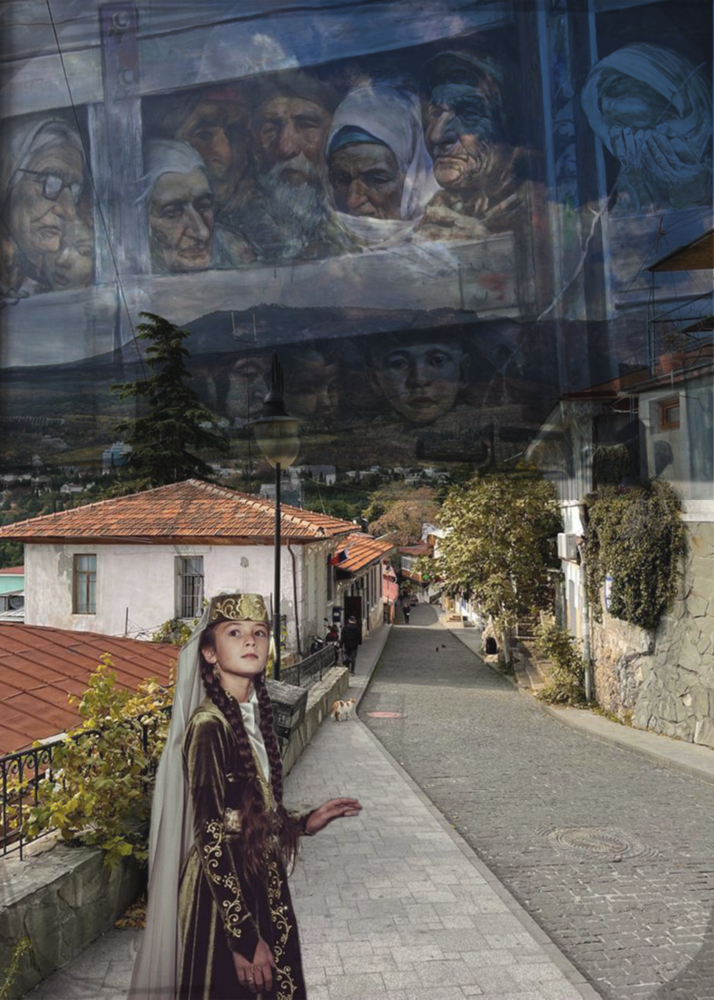

Homework 4 - Photomontage: Deportation of Crimean Tatars
Final Image

Photoshop Layers Screenshot

Concept Explanation
This photomontage explores the historical tragedy of the deportation of Crimean Tatars and the lasting impact this event has had on their culture and identity. The background image of a street in Crimea represents the homeland and the place where Crimean Tatars lived for generations. The young Crimean Tatar girl symbolizes culture, identity, and the future of the people who continue to preserve their traditions. Above her, the image of people inside the train represents the deportation and suffering experienced during the forced displacement in 1944. By placing these images together, the montage creates a visual connection between homeland, memory, and historical trauma. The composition contrasts the peaceful image of Crimea with the painful history of deportation, showing how the past continues to shape the identity and memory of the Crimean Tatar people.
To create this photomontage, I used several Photoshop techniques including selections, layer masks, and blending modes. I used the Quick Selection Tool to isolate the girl and applied a layer mask to remove the background. Layer masks were also used to blend the image of the deportation scene with the sky to create a memory-like effect. I applied the Multiply blending mode to the deportation image to darken it and integrate it with the background. I also used adjustment layers to modify color and contrast, which allowed me to edit the image non-destructively. The images were sourced from public domain historical archives and photographs.